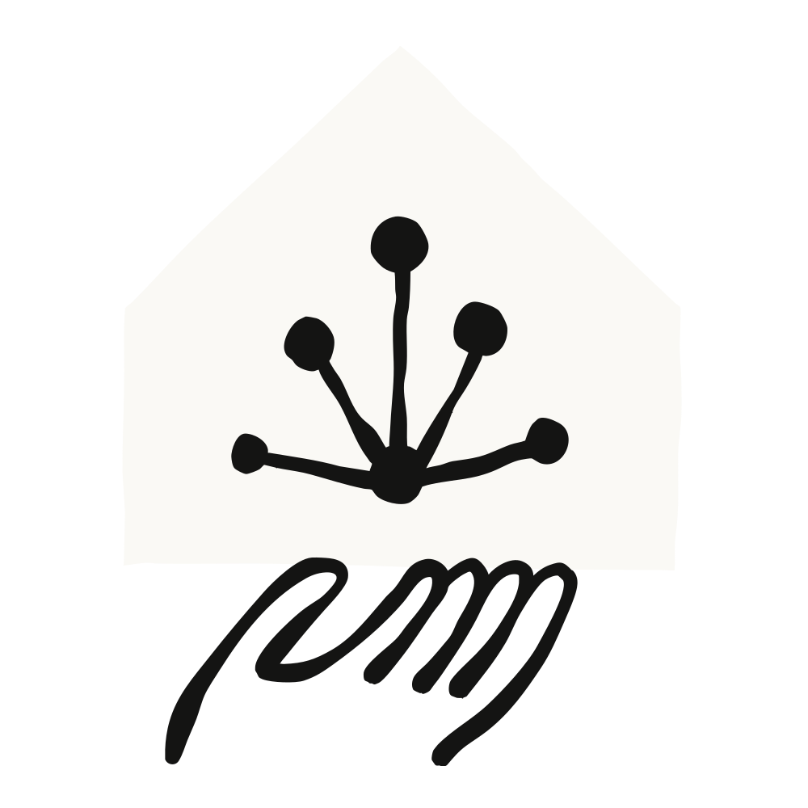
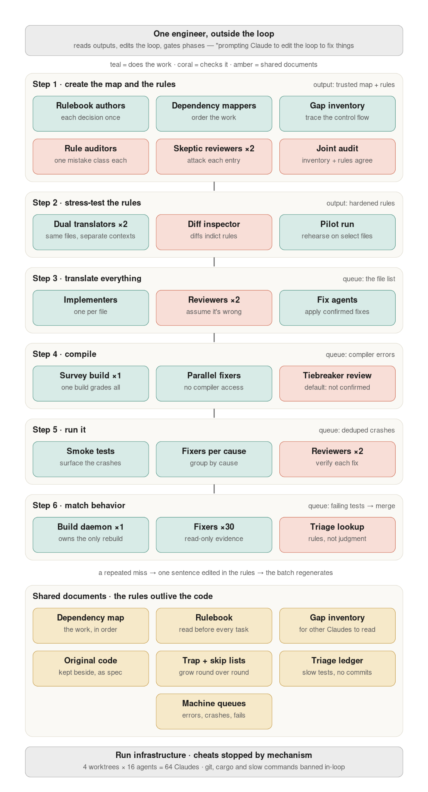
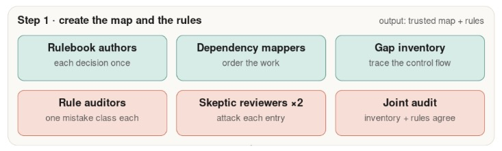
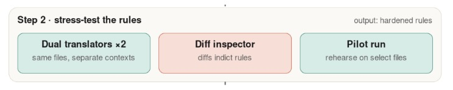
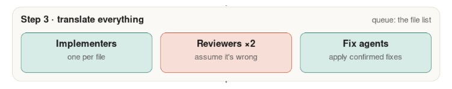
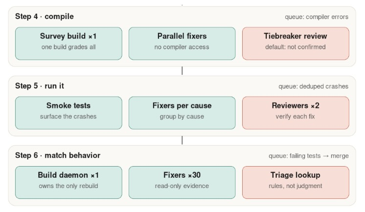

코드 마이그레이션, 즉 운영 중인 코드베이스를 새로운 언어로 옮기는 작업은 최근까지만 해도 몇 년이 걸리는 프로젝트였다.
지난 한 달 사이, Anthropic의 개발자들은 수만에서 수십만 줄에 이르는 코드 패키지 10개를 Claude Fable 5, Claude Opus 4.8, 그리고 다이내믹 워크플로(dynamic workflows)를 이용해 마이그레이션했다. 이 글에서는 그중 두 가지 사례와, 이 프로젝트들에서 얻은 모범 사례를 함께 다룬다.
Bun의 공동 창업자이자 Anthropic 기술 스태프(Member of Technical Staff)인 재러드 섬너(Jarred Sumner)는 Claude Code를 이용해 Bun을 Zig에서 Rust로 마이그레이션했다. 2주도 안 되는 기간에 100만 줄의 코드가 만들어졌고, 병합(merge) 전 CI에서 Bun의 기존 테스트 스위트가 100% 통과했다. 병합 이후 19건의 회귀(regression)가 드러났고 모두 수정됐다. 이 Rust 포팅 결과물은 6월에 Claude Code 안에 반영되어 출시됐다.
Anthropic Labs의 공동 리드(co-lead)인 마이크 크리거(Mike Krieger)는 주말 동안 Python 코드베이스를 16만 5,000줄의 TypeScript로 마이그레이션했다. 여기에는 수백 개의 에이전트, 8개의 단계 게이트(phase gate), 3라운드의 적대적 리뷰(adversarial review), 그리고 모든 명령의 출력을 Python 원본과 비교(diff)하는 최종 동등성 확인(parity check)이 포함됐다.
Claude Code의 새로운 능력은 이처럼 오래 미뤄져 온 프로젝트들의 계산을 바꿔 놓는다. 아래는 이 마이그레이션들이 우리에게 가르쳐 준 것에서 도출한, 지금 우리가 사용하는 6단계 절차다.
핵심 통찰은 이것이다. 코드를 고치는 것이 아니다. 그 코드를 만들어 낸 절차(루프)를 고치는 것이다.
‘어떻게(how)’로 곧장 들어가기 전에 ‘언제(when)’와 ‘왜(why)’를 짚어 볼 가치가 있다. 이런 프로젝트를 둘러싼 전제가 달라졌기 때문이다.
팀이 마이그레이션에 나서는 이유는, 처음 만들었을 때와 지금 사이에 환경이 바뀌었기 때문이다. 알고 있던 트레이드오프가 발목을 잡게 됐거나, 더 나은 방식이 등장했거나, 원래 쓰던 생태계가 쪼그라들고 있거나 셋 중 하나다.
예를 들어 재러드가 처음 Zig를 고른 이유는, Zig가 극도의 단순함과 함께 C 수준의 성능을 제공했기 때문이다. “LLM이 나오기 전, 오클랜드의 비좁은 아파트에서 1년 만에 Bun을 짜던” 1인 창업자에게 이상적이었다. 다만 이 단순함에는 알려진 트레이드오프가 따라왔고, 그는 이에 대해 여기서 밝히고 있다.
시간을 2026년으로 돌려 보자. Bun의 CLI는 월 1,000만 회 넘게 내려받아지고 있고, Claude Code 안에서도 폭넓게 쓰이고 있다.
불과 지난 분기만 해도, 그런 트레이드오프만으로는 로드맵을 얼려 두고 여러 분기짜리 프로젝트에 자원을 투입할 명분이 되지 못했다. 언어 마이그레이션은 더 작고 빠르고 안전한 시스템을 만들어 줄 수 있지만, 아무도 그 비용을 치르고 싶어 하지 않는다.
소프트웨어 엔지니어들은 또한, 예전에는 초대형 프로젝트였던 이 작업에 내재한 커리어 리스크와도 씨름해야 했다. 여러 분기, 혹은 여러 해 동안 두 개의 코드베이스를 동시에 유지해야 할 수도 있었고, 그렇게 해서 나온 결과가 90% 동등성에 그친다면, 시작할 때보다 더 큰 골칫거리를 떠안는 셈이었다.
이제 최악의 시나리오는 그 브랜치를 지우고 다시 시도하는 것이다.
물론 정당한 비즈니스 근거는 여전히 필요하다. 100만 줄 규모의 마이그레이션이 더 이상 4년짜리 프로젝트에서 300만~400만 달러의 엔지니어링 자원을 잡아먹지는 않지만, 그래도 실행하는 데 수만에서 수십만 달러 이상이 든다. 예를 들어 Bun 마이그레이션은 캐시되지 않은 입력 토큰 59억 개와 출력 토큰 6억 9,000만 개를 소모했다. API 가격으로 약 16만 5,000달러다. 마이크의 포팅에서 핵심 부분은 2,700만 토큰이었다.
그러나 마이그레이션의 명분이 이제는 존폐를 가를 만큼 절박할 필요가 없어졌다. 변경 로그(changelog)에 1년치 메모리 버그 패치가 쌓여 있다거나, 만성적인 병목 하나만 있어도 이제는 정당화될 수 있다.
마이크의 프로젝트를 촉발한 건 컴파일 단계였다. 그의 팀이 다루는 내부 도구는 단일 바이너리 형태로 사용자에게 배포된다. 그 바이너리를 Python 툴체인으로 만드는 데 플랫폼당 약 8분이 걸렸고, 릴리스할 때마다 빌드 매트릭스 전체에 걸쳐 총 30분을 기다려야 했다. 포팅 후에는 같은 컴파일이 약 2초 만에 끝나고, 바이너리 실행 시작 속도는 6배 빨라졌으며, 팀은 별도의 배포 파이프라인 하나를 아예 없앨 수 있었다.
Claude Fable 5는 우리가 일반에 제공하는 가장 뛰어난 모델이다. Fable과 Opus 4.8은 특히, 서브에이전트(subagent)를 이용해 병렬 작업 흐름을 위임·지휘·검증하면서 정해진 목표를 향한 여러 경로를 동시에 찾아내는 데 강하다.
대규모 코드 마이그레이션이 이런 고급 모델에 특히 잘 맞는 활용 사례인 이유는 다음과 같다.
아래에서 보게 되겠지만, 마이크와 재러드 모두 마이그레이션 절차의 핵심 단계에서 Fable을 사용했다. 특히 여러 모델 등급을 조합해 토큰 소비를 최적화하는 자문 패턴(advisory pattern)에서 그랬다.
아래 절차는 여러 언어와 상황에 두루 적용되도록 일반화한 것이다. 더 자세한 내용은 재러드의 블로그에서 읽을 수 있다.

마이그레이션 프로젝트를 시작하기 전 선행 조건은 튼튼한 심판(judge)을 갖추는 것이다. 그렇지 않으면 종료 조건도, 성공을 재는 척도도 없게 된다.
심판은 원본 코드와 목표 코드를 동등한 조건에서 평가할 수 있어야 한다. 원래 언어로 작성된 테스트 스위트는 목표 코드에는 존재하지 않을 내부 함수에 의존하는 경우가 많다.
이 심판을 만들려면:
재러드는 제3의 언어(TypeScript)로 작성된 큰 테스트 스위트를 갖고 있었지만, 대부분의 프로젝트는 그렇지 못할 것이다. Python에서 TypeScript로 포팅한 마이크의 경우, 실제 시나리오 7개로 된 동등성 하네스(parity harness)를 만들고, 어떤 동작 변화든 고쳐야 할 버그로 간주했다.
각 단계로 들어가기 전에, 이 그림이 흐름을 따라가는 데 도움이 될 것이다. 이 그림은 대체로 재러드의 방법론을 따르며, 각 단계마다 리뷰와 게이트가 있다. 마이크도 비슷한 루프 워크플로를 써서 전체적으로 유사한 구조를 따랐지만, 그는 마이그레이션 전체를 처음부터 끝까지 한 번 돌린 뒤 그 결과를 바탕으로 규칙과 워크플로를 고쳐 다시 돌렸고, 세 번째 실행 전까지는 매번 결과물을 버렸다.

이 단계에서는 마이그레이션의 토대를 만든다. 단순 번역이 아니라 리팩터링이 필요한 지점들의 목록(갭 인벤토리), 코드를 어떻게 번역할지 정한 룰북, 그리고 마이그레이션 구현 작업 흐름의 순서를 정하는 의존성 지도가 그것이다.
순서가 중요하다. 룰북이 갭 인벤토리보다 먼저 와야 한다. 갭 인벤토리는 룰북의 기본값이 다루지 못하는 것들로 정의되며, 둘은 하나의 합동 감사(joint audit)에서 함께 검증된다.
룰북의 정확한 형태는 시작 시점에 내려야 하는 핵심 아키텍처 결정에 달려 있다. 그중 가장 중요한 것은, 새 코드가 같은 구조를 따를 것인지, 아니면 완전히 새로 설계될 것인지다.
전자(재러드)라면 룰북은 주로, 언어 간 타입과 관용구를 번역하면서 번역하기 까다로운 부분은 갭 인벤토리를 가리키는 룩업 테이블이 된다. 후자(마이크)라면 룰북은 설계 문서가 된다.
재러드는 Claude와 대화하며 룰북을 만들었고, 모호한 영역마다 정책을 세워 나갔다. 또한 그는 자신의 직관에 기반해, 흔히 나타나는 8가지 실패 유형을 각각 검토하도록 특별히 설계한 서브에이전트 8개를 사용했다.
병렬 마이그레이션을 위해 작업 흐름을 효과적으로 나누려면 파일 의존성을 이해해야 한다. 그래야 어떤 파일을 먼저 옮기고 어떤 파일을 같은 배치에 담을지 알 수 있다. 어떤 언어와 코드베이스는 이를 쉽게 해 주는 명시적 매니페스트(manifest)를 갖고 있지만, 레거시 코드베이스나 C/C++, Python처럼 널리 쓰이는 여러 언어에서는 이런 의존성을 직접 찾아내 지도로 그려야 한다.
Claude Code는 에이전트를 투입해, 이 지도를 만들어 내는 결정론적(deterministic) 스크립트를 작성·실행하게 할 수 있다. 마이그레이션 키트의 프롬프트는 워크플로를 이용해 검토-수정 루프를 만든다.
새 언어는 옛 언어와는 다른, 반드시 충족해야 할 요건들을 갖고 있다. Zig에서 Rust로 갈 때의 차이는 수동 메모리 관리였다(C와 C++도 같은 방식으로 동작한다). 예를 들어:
Zig
fn readConfig(allocator: std.mem.Allocator) ![]u8 {
const buf = try allocator.alloc(u8, 1024);
// ...buf 채우기...
return buf; // 호출자가 이걸 해제해야 한다 — 그런데 그렇게 하라고 알려주는 건 주석뿐이다
}
// 'defer allocator.free(buf)'를 깜빡한 호출자도 여전히 컴파일된다 — 누수는 런타임에야 드러난다.
Rust
fn read_config() -> Vec<u8> {
let buf = vec![0u8; 1024];
// ...buf 채우기...
buf // 소유권이 호출자에게 넘어간다; 메모리는 자동으로 해제된다
}
// 옮겨진 뒤에 그걸 쓴다? 두 번 해제한다? 둘 다 컴파일되지 않는다.
// 해제를 깜빡한다? 깜빡할 free 호출 자체가 없다 — drop이 자동이다.
Python에서 TypeScript로 갈 때의 간극은 인터페이스와 계약(contract)이었다. Python은 어떤 형태의 객체를 받고 무엇을 반환하는지 선언하는 계약을 요구하지 않지만, TypeScript는 요구한다. 예를 들어:
Python
def register(handler):
handler.setup()
return handler.run({"retries": 3})
# .setup()과 .run()을 가진 객체라면 무엇이든 여기서 동작한다. 실제로 어떤 객체가 넘어오는지는? 코드베이스 전체를 읽어야 알 수 있다.
TypeScript
interface RunResult { ok: boolean }
interface Handler {
setup(): void;
run(opts: { retries: number }): Promise<RunResult>;
}
function register(handler: Handler): Promise<RunResult> {
handler.setup();
return handler.run({ retries: 3 });
}
// 이게 컴파일되려면 계약이 먼저 명시돼 있어야 한다
재러드와 마이크 모두 이런 암묵적 지식을 담은 갭 인벤토리 파일을 만들었다. 재러드는 이런 간극을 미리 목록화했고, 여기서 우리가 다루는 방식도 그것이다. 반면 마이크는 먼저 번역한 뒤, 사후에 감사하며 갭 인벤토리를 만드는 쪽을 택했다. 두 가지 모두 필요할 수도 있다.
갭 인벤토리 파일을 만드는 Claude Code 프롬프트 예시를 확인해 보라.

이 단계는, 더 큰 마이그레이션을 위한 “시운전(shakedown cruise)” 역할을 하는 미니 마이그레이션을 포함한다.
이 단계에서 재러드는 한 에이전트에게는 룰북을 이용해 파일 3개를 번역하게 하고, 다른 에이전트에게는 “시니어 Rust 엔지니어처럼” 파일 3개를 번역하게 했으며, 또 다른 에이전트에게는 그 둘의 차이(diff)를 이용해 새 번역 규칙을 만들게 했다. 이 단계에서 그는 만약 1,448개 파일 전체로 퍼져 나갔다면 수많은 문제를 일으켰을 치명적 이슈 2건을 잡아냈다.
프롬프트는 대략 이것과 비슷한 모습일 수 있다.
이런 유형의 스트레스 테스트는 구조를 보존하는 마이그레이션에서만 통한다. 같은 파일에 대한 두 번역을 한 줄씩 비교할 수 있는 경우다. 마이크의 경우처럼 룰북이 재설계라면, 그에 상응하는 테스트는 설계 문서 자체를 적대적 리뷰어로 직접 공격한 뒤, 한 번 쓰고 버리는 엔드투엔드 실행으로 검증하는 것이다.
어느 쪽이든, 번역된 파일은 모두 버려라. 목표는 규칙을 다듬는 것이지, 조금씩 진척을 쌓는 것이 아니다.

남은 단계들에서는 동일한 멀티 에이전트 루프 구조를 돌린다. 구현(implement), 검토(review), 수정(fix)이다.
구현자(implementer) 작업은 더 작은 모델에 넘기고, 리뷰어는 더 큰 모델에 맡길 수 있다. 예를 들어 마이크는 본격적인 마이그레이션에서 서브에이전트 12개를 펼칠 때 Claude Sonnet을 사용했다.
작업 큐는 기계적이어야 한다. 배치 스크립트가 번역된 파일이 디스크에 존재하는지 확인해 무엇이 끝났는지 판단하고, 남은 파일들을 구현자 에이전트를 위한 배치로 나눈다. 큐가 매번 디스크로부터 다시 구성되기 때문에, 이 마이그레이션은 구조상 언제든 이어서 재개할 수 있다.
이 단계에서 에이전트는 자기가 하는 작업량을 지나치게 조심스러워할 수 있다. 그 해법은, 다음 단계에서 컴파일러가 실수를 잡아낸다는 맥락과 함께, 단도직입적이고 단호한 프롬프트 지시를 주는 것이다.
번역기가 확신을 갖고 처리하지 못하는 것은 무엇이든 // TODO(port): <이유>로 표시해 4단계에서 처리한다. 이 지점부터는 할 일 목록이 스스로 쓰인다. 컴파일러가 오류를 열거하고, 스모크 테스트가 크래시를 찾아내고, 테스트 스위트가 실패를 보고한다.
두 명의 적대적 리뷰어가 서로 다른 맥락에서 구현자들의 작업을 평가하고, 리뷰어 간 의견이 갈리면 세 번째 에이전트에게 넘어간다. 한 리뷰어가 여러 파일에 걸쳐 같은 실수를 계속 잡아낸다면, 그 해법은 파일별로 고치는 것이 아니다. 룰북에 한 문장을 추가하고 해당 배치를 다시 생성한다. 룰북은 이 단계 내내 계속 자라난다. 코드를 룰북에 맞춰 손으로 고치는 일은 결코 없다.
이 단계에서 주목할 중요한 설계 결정 하나는 컴파일러를 어디에 두느냐다. 마이크는 TypeScript 컴파일러를 모든 루프 안에서 돌렸다. 한 단위를 몇 초 만에 검사하기 때문이다. 재러드는 컴파일러를 루프에서 완전히 금지하고 다음 단계로 미뤘다. cargo가 몇 분씩 걸리기 때문이다.
이 단계에 이르면 무거운 작업은 상당 부분 끝난 상태이고, 프롬프트는 점점 짧아지기 시작한다.

이 세 단계는 동일한 루프 구조를 공유하며, 뒤로 갈수록 사람의 판단이 점점 덜 필요해진다. 그래서 한데 묶어 다룬다.
예를 들어 4단계는 언어와 마이그레이션 규모에 따라 3단계에 녹아 사라지는 경우도 많다.
컴파일러 단계의 규모와 난이도에 따라, 에이전트가 이 단계를 아예 돌리지 않을 수도 있다. 재러드는 워크스페이스 전체에 걸쳐 컴파일러를 한 번씩 호출하는 오케스트레이터 스크립트로 이 단계를 실행했다. 그런 다음 “수정 에이전트(fixer agent)”들이 적대적 리뷰와 병렬로 오류 목록을 훑어 나갔다. 그리고 빌드를 다시 돌리고, 이를 반복했다.
오류 목록을 검토하는 것은, 조정이 필요할 수 있는 구조적 이슈를 잡아내는 데 도움이 된다. 예를 들어 재러드는, Zig의 지연 컴파일(lazy compilation)이 눈감아 주던 순환 임포트(cyclic import)를 고친 뒤 드러난 수천 건의 Rust 모듈 오류에 부딪혔다. 그는 어떤 의존성을 삭제할지, 옮길지, 경계를 재구성할지 분류하는 로직을 코드로 심어 루프를 고쳤다.
5단계 역시 컴파일러 오류 목록과 비슷한, 기계적인 진실의 원천을 갖는다. 바로 스모크 테스트에서 나오는 크래시다. 여기서도 루프의 해법은 이슈를 범주로 묶는 것이었는데, 이 경우에는 근본 원인별로 원인을 묶어 적대적 서브에이전트가 검토했다.
6단계, 우리 이야기의 마지막은 두 코드베이스에 걸쳐 프로그램의 동작을 비교하는 것이다.
이제 우리 파일들은 번역되고, 컴파일되고, 스모크 테스트를 거쳤다. 이제는 이 파일들을 샤딩(shard)해, (선행 조건 단계에서 만든) 테스트 스위트를 상대로 돌릴 차례다. 실패는 “수정 에이전트”로 다뤄, 두 코드베이스를 상대로 실패한 테스트를 검토하게 한다. 적대적 리뷰어가 그 수정을 점검한다.
이 루프의 다음 단계는 빌드 데몬(build daemon)이다. 바이너리를 다시 빌드하도록 허용된 유일한 프로세스다. 수정 에이전트들이 패치를 쓰면, 데몬이 그 패치들을 모아 한 번에 다시 빌드하고, 영향을 받은 테스트를 다시 돌린 뒤 결과를 되먹인다. 이렇게 하면 가장 비싼 연산을, 여러 에이전트가 제각각 촉발하게 두지 않고 순차 처리하게 된다.
같은 실패가 여러 테스트에 걸쳐 반복되면, 수정은 상류로 올라간다. 그 버그를 만들어 낸 규칙을 손보고, 그 규칙이 건드린 파일만 다시 생성한다.
여기서 마이크의 접근이 중요하다. 많은 개발자에게는 이미 구축돼 있거나 포팅된 테스트 스위트가 없을 것이기 때문이다. 마이크는 Claude에게 작은 스크립트를 만들게 해, 새 포팅본과 원본 Python 코드베이스 양쪽을 상대로 실제 시나리오 7개를 돌리고 결과를 비교(diff)했다. 실패하는 시나리오마다 각자의 수정 에이전트가 붙었고, 7개가 전부 통과할 때까지 루프가 돌았다.
그다음 그는 한 걸음 더 나아갔다. Claude가 스스로 엔드투엔드 테스트 스위트를 설계해 밤새 자율적으로 돌렸고, 깨진 것을 고쳐 가며 나흘 밤 연속으로 다시 실행했다. 그 결과, 어떤 시나리오 목록으로도 예측하지 못했을 사소한 흠들까지 잡아냈다.
교훈은, 테스트 스위트가 없다고 해서 이 단계가 막히지는 않는다는 것이다. 물려받을 심판이 없다면, Claude에게 하나 만들게 하라. 어느 쪽이든 원본 코드베이스가 실제로 확인된 기준값이다.
매번의 실행이, 이전 실행이 알려주지 못한 무언가를 우리에게 가르쳐 줬다. 다음 마이그레이션이 이 가이드가 담지 못한 것들을 가르쳐 줄 거라고 봐도 무방하다. 그래도 모든 프로젝트에서 통했던 몇 가지 실천 원칙은 있다.
재러드의 Bun 마이그레이션은 이제 운영 환경에 올라가 있다. 다만 모든 마이그레이션에는 트레이드오프가 있다. 예를 들어 Rust 코드의 약 4%는 “unsafe” 블록 안에 들어 있는데, 대부분 C/C++ 경계에서의 한 줄짜리 포인터 연산이다.
그러나 새 코드베이스는 측정 가능한 수준으로 더 낫다. 팀의 도구가 탐지할 수 있는 모든 메모리 누수가 수정됐다. 빌드를 2,000번 반복하는 어떤 벤치마크에서는 메모리 사용량이 6,745MB에서 609MB로 떨어졌다. 바이너리는 Linux와 Windows에서 19% 더 작아졌다. 그리고 언어 간 최적화 덕분에, HTTP 서빙과 next build·tsc 같은 실제 워크로드 전반에서 2~5% 더 빨라졌다.
오래 미뤄 둔 마이그레이션의 계산을 다시 해 볼 때가 됐는지 생각해 보라. 그동안 참고 견뎌 온 코드베이스를 하나 골라, 그것을 마이그레이션하는 절차가 어떤 모습일지 Claude에게 물어보라.